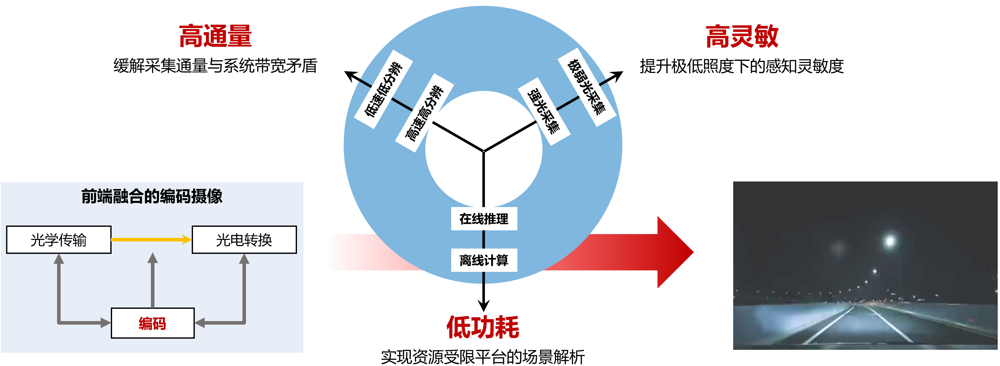
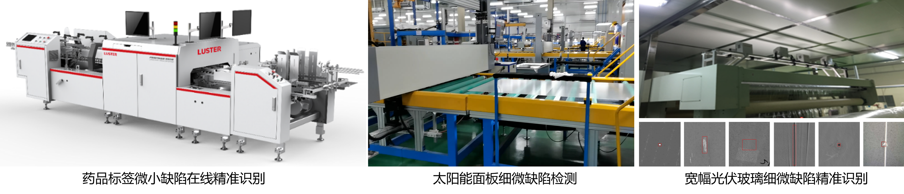

项目介绍
传统成像技术普遍采用“先采集，后处理”的模式，但在实际应用中面临采集速度受限、感知灵敏度不足、实时性差等多重挑战。其根本原因在于前端光学采集系统与后端计算方法的割裂，导致光信息采集通量受限、成像质量不佳及能耗水平较高。为此，本项目提出了前端光学采集与后端计算深度融合的新型编码成像体系，旨在突破传统成像技术的性能瓶颈与能耗限制。
项目围绕高速、高灵敏度及低功耗成像目标，开展了高时空分辨率、高灵敏度、低功耗编码摄像理论与关键技术研究，继而设计轻量级原型系统，提高了编码摄像系统的实用性。在上述研究的基础上，项目组设计并搭建了面向无人系统应用的编码成像验证平台，通过应用验证与示范，推动技术落地，为无人驾驶、智能监控及生物医学成像等领域提供理论支持与技术保障。
代表性研究成果
- 针对高速运动场景成像过程中时间分辨率和空间分辨率无法兼顾的难题，提出了强度-事件联合的混合编码成像方法、复合编码孔径压缩成像方法、深度光学调制的压缩成像方法等，解决了高速高分辨成像面临的带宽限制问题，能够同时捕获高动态场景空间结构和时域变化细节。
- 针对弱光环境中噪声水平高、动态范围大、语义感知困难的问题，提出了亚像素级配准的弱光-强光双路采集系统、构建了有标注的大规模视频数据库，提出了监督式时-空-谱联合的弱光视频增强方法，并设计了低照度视频中光照自适应的物体检测方法， 为极低光照条件下的高质量成像和分析提供了可靠技术手段。
- 针对移动平台载荷受限和计算资源不足的问题，设计与搭建了轻型的编码曝光采集方法和装置、便携式宽视场高分辨光谱采集方法和装置等，提出了基于模型-数据联合驱动的高效重建框架和神经网络多项式展开技术，显著降低了编码成像系统的体积重量和解码重建算法功耗，为资源受限平台的视觉应用提供了有力支持。
- 项目开发的编码摄像感知方法应用于自动驾驶、生物医学和工业检测等领域，为无人物流车、服务机器人、基因测序设备、病理切片扫描仪器、高速工业产线缺陷检测等系统提供装备与技术支撑，稳定运行于多类应用场景，取得了显著的经济效益和社会效益。
推广应用
应用案例一：移动平台视觉导航
搭建移动无人测试平台，部署视觉、光谱、力觉、惯性、热传感器等，并开发多源态势融合算法，实现环境感知。

应用案例二：高速高分辨工业检测系统
成果总结
课题组共发表学术论文47篇，包含Nature Communications、IEEE TPAMI、Springer IJCV、OSA Optica、Proc. IEEE、PNAS等领域顶级期刊及CVPR、ICCV、AAAI、ICLR等顶级国际会议；获省部级科技奖励一等奖3项、二等奖1项、科技竞赛一等奖1项；获授权国家发明专利授权13项，并有10项处于实审阶段；登记软件著作权8项；培养博士生8名（其中3名获高校教职）、硕士生10名（1名获评江苏省优秀硕士学位论文）、博士后出站2名，项目成员1名获得国家级青年人才称号。